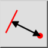

Distance Entity to Point
Toolbar / Icon:


Menu: Informacije > Distance Entity to Point
Shortcut: I, E
Commands: infodistep | ie
This is an automatic translation.
Toolbar / Icon:


Ovaj alat mjeri točnu udaljenost između entiteta i točke koju zadaje korisnik.